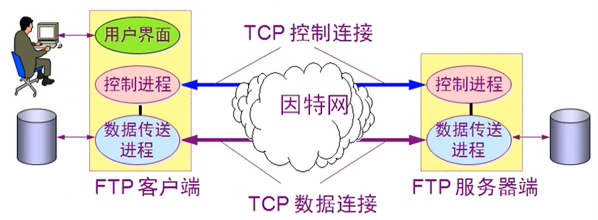

网络应用层概述 链接到标题
常见协议 链接到标题
- 域名解析系统 DNS(Domain Name System)
- 动态主机配置协议 DHCP
- 文件传送协议 FTP(File Transfer Protocol)
- 远程终端协议 TELNET
- 远程桌面 RDP
- 万维网 www(World Wide Web)
- 电子邮件(SMTP POP IMAP)
DNS 服务 链接到标题
作用：负责解析域名 将域名解析成 IP
域名分类： 根域名
顶级域名 com，edu，net，cn，org，gov
二级域名 baidu，souhu，bilibili
三级域名 dba，例如 dba.souhu.com
命令：ns lookup 得到 IP 地址
配置内网 DNS 服务器的作用： 链接到标题
可以避免网络阻塞，让其他计算机通过内网 DNS 服务器解析 IP 地址，内网 DNS 服务器向外请求，将常用 IP 地址缓存到本地，减少内网访问 Interne 的流量。
动态主机配置系统 DHCP 链接到标题
客户机在网中发广播请求地址，目标 IP 是 4 个 255，目标 MAC 地址是全 FF。DHCP 收到后，会从地址池里选一个给客户机。如果网络中有 2 个 DHCP 服务端且都给了反馈，此时计算机还需要返回一个数据通知他选择了谁提供的地址。
另一个 DHCP 客户端发现没有他的，于是收回他提供的。从这个角度看，网络中不能有太多的 DHCP 服务端,DHCP 服务器必须是固定 IP 地址，DHCP 跨网段配置 IP 地址需要 DHCP 配 IP 地址的计算机，需要在他所在的网络的路由器的网关上配置 IPhelper address，再访问到 DHCP.
文本传输协议 FTP 链接到标题

FTP 使用两个 TCP 连接
FTP 的连接方式包括控制连接和数据连接，每上传或下载一个文件就会建立一个会话。
控制连接：标准端口为 21，用于发送 FTP 命令信息
数据连接：标准端口为 20，用于上传或下载数据
FTP 数据连接 链接到标题
涉及主动模式和被动模式
主动模式：FTP 客户端告诉 FTP 服务器的 21 端口，它在使用什么端口监听，然后 FTP 服务器的 20 端口主动和 FTP 客户端端口建立连接。
主动模式防火墙需要打开 21 和 20 端口
被动模式：FTP 服务器打开在指定范围内的某个新端口并且进行监听，被动等待客户端发起连接。
防火墙只能打开 21 和 20 端口，被动模式 FTP 不能下载数据。
FTP 传输模式 链接到标题
文本模式：ASCII 模式，以文本序列传输数据。
二进制模式：Binary 模式，以二进制序列传输数据。
telnet 和 RDP 协议 链接到标题
远程终端协议 telnet 和远程桌面协议 RDP 都用来进行远程控制，RDP 协议有图形界面，而 telnet 没有，Server 多用户操作系统可以多用户同时使用服务器。
HTTP 协议概述 链接到标题
HTTP 是一个客户端终端（用户）和服务器端（网站）请求和应答的标准（TCP）。通过使用网页浏览器、网络爬虫或者其它的工具，客户端发起一个 HTTP 请求到服务器上指定端口（默认端口为 80）。我们称这个客户端为用户代理程序（user agent）。应答的服务器上存储着一些资源，比如 HTML 文件和图像。我们称这个应答服务器为源服务器（origin server）。在用户代理和源服务器中间可能存在多个“中间层”，比如代理服务器、网关或者隧道（tunnel）。
尽管 TCP/IP 协议是互联网上最流行的应用，HTTP 协议中，并没有规定必须使用它或它支持的层。事实上，HTTP 可以在任何互联网协议上，或其他网络上实现。HTTP 假定其下层协议提供可靠的传输。因此，任何能够提供这种保证的协议都可以被其使用。因此也就是其在 TCP/IP 协议族使用 TCP 作为其传输层。
通常，由 HTTP 客户端发起一个请求，创建一个到服务器指定端口（默认是 80 端口）的 TCP 连接。HTTP 服务器则在那个端口监听客户端的请求。一旦收到请求，服务器会向客户端返回一个状态，比如”HTTP/1.1 200 OK”，以及返回的内容，如请求的文件、错误消息、或者其它信息。
使用 Web 代理服务器访问网站 链接到标题
内网其它主机不能通过路由访问 Internet，只能由 web 代理访问外网，然后内网其它主机访问这个 web 代理来实现上网功能，如果 web 代理在外网，反而速度更慢。
- 节省内网访问 Internet 的带宽，便于访问内容变化不大的网站。
- 绕过防火墙访问外网，例如访问某个禁止的网站 A，但是假如通过在与 A 同一个网络中的 web 代理，就可以访问该网站。
- 通过 web 代理避免被跟踪。